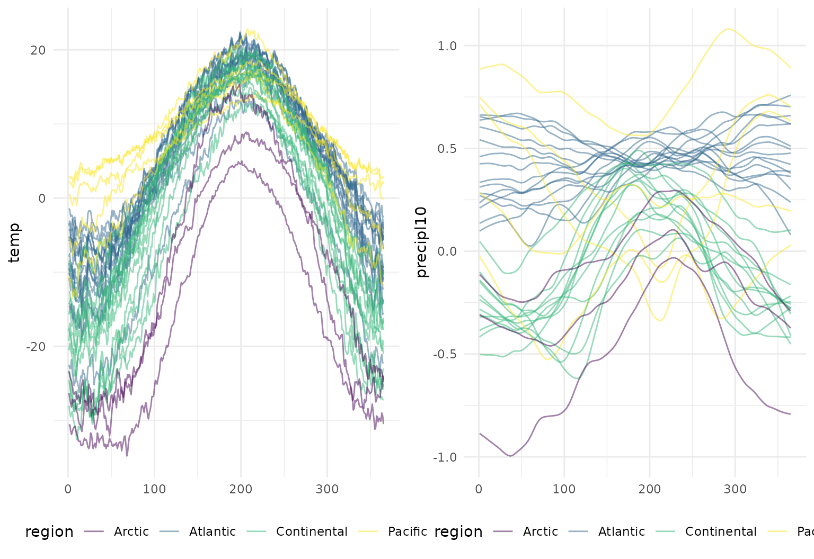
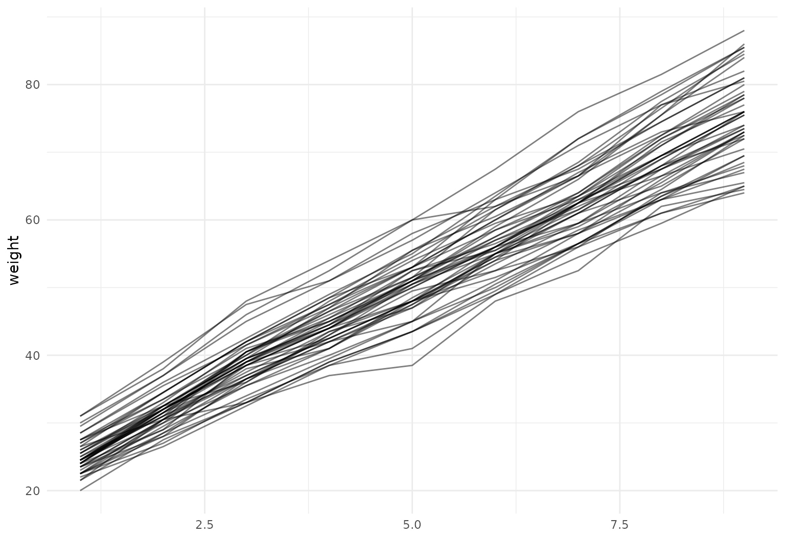

Converting to & from tf
Jeff Goldsmith, Fabian Scheipl
2022-03-16
Source:vignettes/x02_Conversion.Rmd
x02_Conversion.RmdFunctional data have often been stored in matrices or data frames. Although these structures have sufficed for some purposes, they are cumbersome or impossible to use with modern tools for data wrangling.
In this vignette, we illustrate how to convert data from common structures to tf objects. Throughout, functional data vectors are stored as columns in a data frame to facilitate subsequent wrangling and analysis.
Conversion from matrices
One of the most common structures for storing functional data has been a matrix. Especially when subjects are observed over the same (regular or irregular) grid, it is natural to observations on a subject in rows (or columns) of a matrix. Matrices, however, are difficult to wrangle along with data in a data frame, leading to confusing and easy-to-break subsetting across several objects.
In the following examples, we’ll use tfd to get a tf vector from matrices. The tfd function expects data to be organized so that each row is the functional observation for a single subject. It’s possible to focus only on the resulting tf vector, but in keeping with the broader goals of tidyfun we’ll add these as columns to a data frame.
The DTI data in the refund package has been a popular example in functional data analysis. In the code below, we create a data frame (or tibble) containing scalar covariates, and then add columns for the cca and rcst track profiles. This code was used to create the tidyfun::dti_df dataset included in the package.
dti_df = tibble(
id = refund::DTI$ID,
visit = refund::DTI$visit,
sex = refund::DTI$sex,
case = factor(ifelse(refund::DTI$case, "MS", "control")))
dti_df$cca = tfd(refund::DTI$cca, arg = seq(0,1, l = 93))
dti_df$rcst = tfd(refund::DTI$rcst, arg = seq(0, 1, l = 55))In tfd, the first argument is a matrix; arg defines the grid over which functions are observed. The output of tfd is a vector, which we include in the dti_df data frame.
dti_df
## # A tibble: 382 × 6
## id visit sex case cca
## <dbl> <int> <fct> <fct> <tfd_irrg>
## 1 1001 1 female control [1]: (0.000,0.49);(0.011,0.52);(0.022,0.54); ...
## 2 1002 1 female control [2]: (0.000,0.47);(0.011,0.49);(0.022,0.50); ...
## 3 1003 1 male control [3]: (0.000,0.50);(0.011,0.51);(0.022,0.54); ...
## 4 1004 1 male control [4]: (0.000,0.40);(0.011,0.42);(0.022,0.44); ...
## 5 1005 1 male control [5]: (0.000,0.40);(0.011,0.41);(0.022,0.40); ...
## 6 1006 1 male control [6]: (0.000,0.45);(0.011,0.45);(0.022,0.46); ...
## 7 1007 1 male control [7]: (0.000,0.55);(0.011,0.56);(0.022,0.56); ...
## 8 1008 1 male control [8]: (0.000,0.45);(0.011,0.48);(0.022,0.50); ...
## 9 1009 1 male control [9]: (0.000,0.50);(0.011,0.51);(0.022,0.52); ...
## 10 1010 1 male control [10]: (0.000,0.46);(0.011,0.47);(0.022,0.48); ...
## # … with 372 more rows, and 1 more variable: rcst <tfd_irrg>Finally, we’ll make a quick spaghetti plot to illustrate that the complete functional data is included in each tf column.
dti_df %>%
ggplot() +
geom_spaghetti(aes(y = cca, col = case, alpha = .2 + .4*(case == "control"))) +
facet_wrap(~ sex) +
scale_alpha(guide = 'none', range = c(.2, .4))
We’ll repeat the same basic process using a second, and probably even-more-perennial, functional data example: the Canadian weather data in the fda package. Here, functional data are stored in a three-dimensional array, with dimensions corresponding to day, station, and outcome (temperature, precipitation, and log10 precipitation).
In the following, we first create a tibble with scalar covariates, then use tfd to create functional data vectors, and finally include the resulting vectors in the dataframe. In this case, our args are days of the year, and we use tf_smooth to smooth the precipitation outcome. Because the original data matrices record the different observations in the columns instead of the rows, we have to use their transpose in the call to tfd:
canada = tibble(
place = fda::CanadianWeather$place,
region = fda::CanadianWeather$region,
lat = fda::CanadianWeather$coordinates[,1],
lon = -fda::CanadianWeather$coordinates[,2])
canada$temp = tfd(t(fda::CanadianWeather$dailyAv[,,1]), arg = 1:365)
canada$precipl10 =
tfd(t(fda::CanadianWeather$dailyAv[,,3]), arg = 1:365) %>%
tf_smooth
## using f = 0.15 as smoother span for lowessThe resulting data frame is shown below.
canada
## # A tibble: 35 × 6
## place region lat lon temp
## <chr> <chr> <dbl> <dbl> <tfd_reg>
## 1 St. Johns Atlantic 47.3 -52.4 [1]: (1, -4);(2, -3);(3, -3); ...
## 2 Halifax Atlantic 44.4 -63.4 [2]: (1, -4);(2, -4);(3, -5); ...
## 3 Sydney Atlantic 46.1 -60.1 [3]: (1, -4);(2, -4);(3, -5); ...
## 4 Yarmouth Atlantic 43.5 -66.1 [4]: (1, -1);(2, -2);(3, -2); ...
## 5 Charlottvl Atlantic 42.5 -80.2 [5]: (1, -6);(2, -6);(3, -7); ...
## 6 Fredericton Atlantic 45.6 -66.4 [6]: (1, -8);(2, -8);(3, -9); ...
## 7 Scheffervll Atlantic 54.5 -64.5 [7]: (1,-22);(2,-23);(3,-23); ...
## 8 Arvida Atlantic 48.3 -71.1 [8]: (1,-14);(2,-14);(3,-15); ...
## 9 Bagottville Atlantic 48.2 -70.5 [9]: (1,-15);(2,-15);(3,-16); ...
## 10 Quebec Atlantic 46.5 -71.1 [10]: (1,-11);(2,-11);(3,-12); ...
## # … with 25 more rows, and 1 more variable: precipl10 <tfd_reg>A plot containing both functional observations is shown below.
temp_panel =
canada %>%
ggplot(aes(y = temp, color = region)) + geom_spaghetti()
precip_panel =
canada %>%
ggplot(aes(y = precipl10, color = region)) + geom_spaghetti()
gridExtra::grid.arrange(temp_panel, precip_panel, nrow = 1)
Conversion to tf from a data frame
… in “long” format
“Long” format data frames containing functional data include columns containing a subject identifier, the functional argument, and the value each subject’s function takes at each argument. There are also often (but not always) non-functional covariates that are repeated within a subject. For data in this form, we use tf_nest to produce a data frame containing a single row for each subject.
A first example is the pig weight data from the SemiPar package, which is a nice example from longitudinal data analysis. This includes columns for id.num, num.weeks, and weight – which correspond to the subject, argument, and value.
data("pig.weights", package = "SemiPar")
pig.weights = as_tibble(pig.weights)
pig.weights
## # A tibble: 432 × 3
## id.num num.weeks weight
## <int> <int> <dbl>
## 1 1 1 24
## 2 1 2 32
## 3 1 3 39
## 4 1 4 42.5
## 5 1 5 48
## 6 1 6 54.5
## 7 1 7 61
## 8 1 8 65
## 9 1 9 72
## 10 2 1 22.5
## # … with 422 more rowsWe create pig_df by nesting weight within subject. The result is a data frame containing a single row for each pig, and columns for id.num and the weight function.
pig_df =
pig.weights %>%
tf_nest(weight, .id = id.num, .arg = num.weeks)
pig_df
## # A tibble: 48 × 2
## id.num weight
## <int> <tfd_reg>
## 1 1 [1]: (1,24);(2,32);(3,39); ...
## 2 2 [2]: (1,22);(2,30);(3,40); ...
## 3 3 [3]: (1,22);(2,28);(3,36); ...
## 4 4 [4]: (1,24);(2,32);(3,40); ...
## 5 5 [5]: (1,24);(2,32);(3,37); ...
## 6 6 [6]: (1,23);(2,30);(3,36); ...
## 7 7 [7]: (1,22);(2,28);(3,36); ...
## 8 8 [8]: (1,24);(2,30);(3,38); ...
## 9 9 [9]: (1,20);(2,28);(3,33); ...
## 10 10 [10]: (1,26);(2,32);(3,40); ...
## # … with 38 more rowsWe’ll make a quick plot to show the result.
pig_df %>%
ggplot(aes(y = weight)) +
geom_spaghetti()
A second example uses the ALA::fev1 dataset. ALA is not available on CRAN but can be installed using the line below.
install.packages("ALA", repos="http://R-Forge.R-project.org")In this dataset, both height and logFEV1 are observed at multiple ages for each child; that is, there are two functions observed simultaneously, over a shared argument. We can use tf_nest to create a dataframe with a single row for each subject, which includes both non-functional covariates (like age and height at baseline), and functional observations logFEV1 and height.
ALA::fev1 %>%
glimpse()
## Rows: 1,994
## Columns: 6
## $ id <fct> 1, 1, 1, 1, 1, 1, 1, 2, 2, 2, 2, 2, 2, 2, 2, 3, 3, 3, 3, 3, 3, 3, 3, 3, 4, 4, 4, 4, 4, 4, 4, 4, 4, 4, 5, 5, …
## $ age <dbl> 9.3415, 10.3929, 11.4524, 12.4600, 13.4182, 15.4743, 16.3723, 6.5873, 7.6496, 12.7392, 13.7741, 14.6940, 15.…
## $ height <dbl> 1.20, 1.28, 1.33, 1.42, 1.48, 1.50, 1.52, 1.13, 1.19, 1.49, 1.53, 1.55, 1.56, 1.57, 1.57, 1.18, 1.23, 1.30, …
## $ age0 <dbl> 9.3415, 9.3415, 9.3415, 9.3415, 9.3415, 9.3415, 9.3415, 6.5873, 6.5873, 6.5873, 6.5873, 6.5873, 6.5873, 6.58…
## $ height0 <dbl> 1.20, 1.20, 1.20, 1.20, 1.20, 1.20, 1.20, 1.13, 1.13, 1.13, 1.13, 1.13, 1.13, 1.13, 1.13, 1.18, 1.18, 1.18, …
## $ logFEV1 <dbl> 0.21511, 0.37156, 0.48858, 0.75142, 0.83291, 0.89200, 0.87129, 0.30748, 0.35066, 0.75612, 0.86710, 1.04732, …
ALA::fev1 %>%
group_by(id) %>%
mutate(n_obs = n()) %>%
filter(n_obs > 1) %>%
tf_nest(logFEV1, height, .arg = age) %>%
glimpse()
## Rows: 252
## Columns: 6
## $ id <fct> 1, 2, 3, 4, 5, 6, 7, 8, 9, 10, 11, 13, 15, 16, 18, 20, 21, 22, 23, 24, 25, 26, 27, 28, 29, 30, 31, 32, 33, 3…
## $ age0 <dbl> 9.3415, 6.5873, 6.9131, 6.7598, 6.5024, 6.8994, 6.4339, 7.1869, 6.8966, 7.7892, 7.6140, 7.5483, 7.8412, 6.50…
## $ height0 <dbl> 1.20, 1.13, 1.18, 1.15, 1.11, 1.24, 1.18, 1.27, 1.17, 1.13, 1.32, 1.25, 1.25, 1.20, 1.19, 1.24, 1.21, 1.23, …
## $ n_obs <int> 7, 8, 9, 10, 7, 11, 7, 9, 9, 10, 6, 3, 5, 11, 12, 10, 9, 8, 12, 2, 2, 11, 11, 7, 9, 11, 11, 4, 2, 12, 3, 9, …
## $ logFEV1 <tfd_irrg> [<9.3415, 10.3929, 11.4524, 12.4600, 13.4182, 15.4743, 16.3723>, <0.21511, 0.37156, 0.48858, 0.75142, 0…
## $ height <tfd_irrg> [<9.3415, 10.3929, 11.4524, 12.4600, 13.4182, 15.4743, 16.3723>, <1.20, 1.28, 1.33, 1.42, 1.48, 1.50, 1…… in “wide” format
In some cases functional data are stored in “wide” format, meaning that there are separate columns for each argument, and values are stored in these columns. In this case, tf_gather can be use to collapse across columns to produce a function for each subject.
The example below again uses the refund::DTI dataset. We convert cca so that, instead of acting as a matrix, it is in “wide” format. We then use tf_gather to combine the cca observations into a function.
dti_df =
refund::DTI %>%
janitor::clean_names() %>%
select(-starts_with("rcst")) %>%
tf_gather(starts_with("cca")) %>%
as_tibble()
## creating new tfd-column <cca>Reversing the conversion
tidyfun includes a wide range of tools for exploratory analysis and visualization, but many analysis approaches require data to be stored in more traditional formats. Several functions are available to aid in this conversion.
Conversion from tf to data frames
The functions tf_unnest and tf_spread reverse the operations in tf_nest and tf_gather, respectively – that is, they take a data frame with a functional observation and produce long or wide data frames. We’ll illustrate these with the pig_df data set.
First, to produce a long-format dataf rame, one can use tf_unnest:
pig_df %>%
tf_unnest()
## Warning in tf_unnest.data.frame(.): `cols` is now required.
## Please use `cols = c(weight)`
## # A tibble: 432 × 3
## id.num weight_arg weight_value
## <int> <int> <dbl>
## 1 1 1 24
## 2 1 2 32
## 3 1 3 39
## 4 1 4 42.5
## 5 1 5 48
## 6 1 6 54.5
## 7 1 7 61
## 8 1 8 65
## 9 1 9 72
## 10 2 1 22.5
## # … with 422 more rowsTo produce a wide-format data frame, one can use tf_spread:
pig_df %>%
tf_spread()
## # A tibble: 48 × 10
## id.num weight_1 weight_2 weight_3 weight_4 weight_5 weight_6 weight_7
## * <int> <dbl> <dbl> <dbl> <dbl> <dbl> <dbl> <dbl>
## 1 1 24 32 39 42.5 48 54.5 61
## 2 2 22.5 30.5 40.5 45 51 58.5 64
## 3 3 22.5 28 36.5 41 47.5 55 61
## 4 4 24 31.5 39.5 44.5 51 56 59.5
## 5 5 24.5 31.5 37 42.5 48 54 58
## 6 6 23 30 35.5 41 48 51.5 56.5
## 7 7 22.5 28.5 36 43.5 47 53.5 59.5
## 8 8 23.5 30.5 38 41 48.5 55 59.5
## 9 9 20 27.5 33 39 43.5 49 54.5
## 10 10 25.5 32.5 39.5 47 53 58.5 63
## # … with 38 more rows, and 2 more variables: weight_8 <dbl>, weight_9 <dbl>Converting back to a matrix or data frame
To convert tf vector to a matrix, use as.matrix:
weight_vec = pig_df$weight
weight_matrix =
weight_vec %>% as.matrix
weight_matrix[1:3, 1:5]
## 1 2 3 4 5
## 1 24.0 32.0 39.0 42.5 48.0
## 2 22.5 30.5 40.5 45.0 51.0
## 3 22.5 28.0 36.5 41.0 47.5To convert a tf vector to a standalone data frame with "id","arg","value"-columns, use as.data.frame():
weight_vec %>%
as.data.frame()
## .
## 1 1: (1,24);(2,32);(3,39); ...
## 2 2: (1,22);(2,30);(3,40); ...
## 3 3: (1,22);(2,28);(3,36); ...
## 4 4: (1,24);(2,32);(3,40); ...
## 5 5: (1,24);(2,32);(3,37); ...
## 6 6: (1,23);(2,30);(3,36); ...
## 7 7: (1,22);(2,28);(3,36); ...
## 8 8: (1,24);(2,30);(3,38); ...
## 9 9: (1,20);(2,28);(3,33); ...
## 10 10: (1,26);(2,32);(3,40); ...
## 11 11: (1,24);(2,31);(3,40); ...
## 12 12: (1,24);(2,29);(3,39); ...
## 13 13: (1,24);(2,30);(3,36); ...
## 14 14: (1,22);(2,30);(3,37); ...
## 15 15: (1,25);(2,32);(3,38); ...
## 16 16: (1,22);(2,28);(3,34); ...
## 17 17: (1,31);(2,38);(3,48); ...
## 18 18: (1,28);(2,32);(3,36); ...
## 19 19: (1,30);(2,37);(3,45); ...
## 20 20: (1,26);(2,32);(3,40); ...
## 21 21: (1,26);(2,32);(3,40); ...
## 22 22: (1,28);(2,36);(3,42); ...
## 23 23: (1,26);(2,34);(3,42); ...
## 24 24: (1,28);(2,34);(3,41); ...
## 25 25: (1,22);(2,27);(3,34); ...
## 26 26: (1,22);(2,26);(3,32); ...
## 27 27: (1,24);(2,29);(3,36); ...
## 28 28: (1,22);(2,30);(3,36); ...
## 29 29: (1,28);(2,34);(3,42); ...
## 30 30: (1,24);(2,28);(3,33); ...
## 31 31: (1,24);(2,30);(3,38); ...
## 32 32: (1,24);(2,32);(3,40); ...
## 33 33: (1,24);(2,32);(3,39); ...
## 34 34: (1,24);(2,32);(3,40); ...
## 35 35: (1,24);(2,32);(3,38); ...
## 36 36: (1,24);(2,32);(3,40); ...
## 37 37: (1,24);(2,32);(3,38); ...
## 38 38: (1,26);(2,33);(3,42); ...
## 39 39: (1,26);(2,32);(3,39); ...
## 40 40: (1,25);(2,31);(3,36); ...
## 41 41: (1,26);(2,30);(3,33); ...
## 42 42: (1,24);(2,32);(3,39); ...
## 43 43: (1,24);(2,31);(3,38); ...
## 44 44: (1,27);(2,34);(3,42); ...
## 45 45: (1,31);(2,39);(3,48); ...
## 46 46: (1,27);(2,34);(3,40); ...
## 47 47: (1,30);(2,37);(3,46); ...
## 48 48: (1,28);(2,36);(3,42); ...